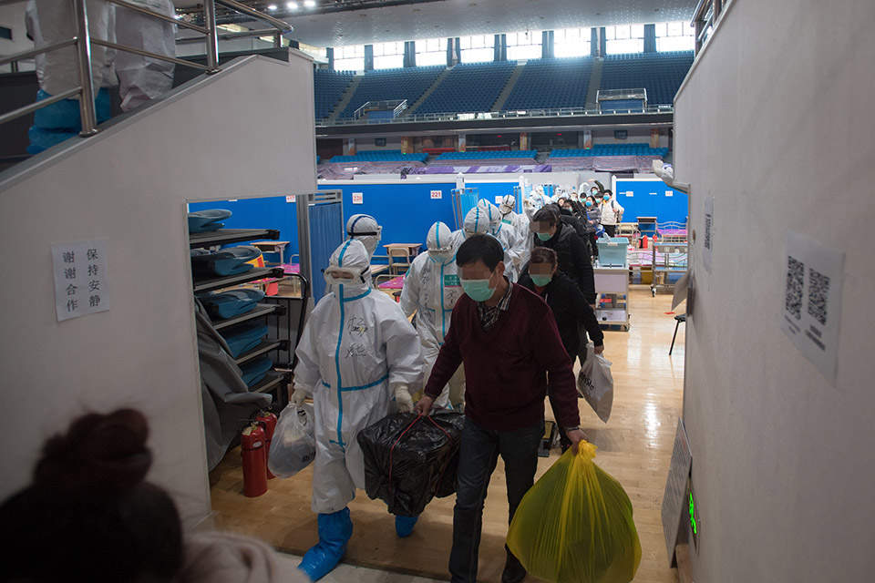

新冠不存在短期复发？科学推论直指“复阳”实质
原文链接 备份链接 3 月 4 日，武汉市多家方舱医院收到紧急通知，暂停办理病人出院，对于出院的新冠患者施行更加严格的检测标准和审核流程，第二天就要正式开始落实。此前，有的方舱医院每天有 30、40 名患者出院。 据澎湃、界面等多方报 …
（本系列均为南方周末、南方人物周刊原创，限时免费阅读中）
病人的转移和分流，每天都要当日完成。“每天的量，你必须今天转完，你必须今天评估完，都是当天必须清的，日清。”
多位专家都曾和南方周末记者表示，复阳病人传染性应该不强。但他们也强调，这更多是基于他们目前的临床观察，尚未有研究证明。
抗体检测在排除疑似病例诊断中的意义，还有待更多临床数据验证。王锐智更倾向于认为，抗体检测的作用不在于作为诊断的证据，而是作为核酸检测的验证。

2020年3月10日，医护人员护送最后49名痊愈患者出舱。 （新华社记者 肖艺/图）
坚持两个多月抗击疫情之后，武汉已在修复医院，计划在3月底将原来五十多家定点医院收缩为10家。好消息接踵而至，3月10日，所有方舱医院休舱，众多援鄂医疗队逐渐返程，3月18日，武汉新增确诊病例出现零增长。
但这是一种人类不曾遭遇的未知疫病。在武汉，无论遇到什么级别的专家，他们都会说，对疾病的认识尚在进行之中。在恢复正常医疗秩序和认知新冠病毒的有限性之间，一些出院病人的病情常充满不确定性。
截至3月21日，全国累计治愈72244名新冠肺炎病人，一个重要的问题需要被提出：这些病人出院后情况如何，他们究竟该如何进行管理与复查？
经过23天治疗，2020年3月7日，新冠肺炎临床诊断病人李志浩从武汉市第一医院出院。出院前最后一次CT显示：部分病灶范围较前减小，密度减低，有好转趋势。3次核酸检测和抗体检测结果皆为阴性。
李志浩对出院有些犹豫。这是出院病人的普遍心态。
同一病区的吴强也如此，虽然6次核酸检测均为阴性，但抗体检测却查出两个阳性。在血清学证据上，说明他最近正在被新冠病毒感染。抗体检测几天后，一个上午，一位查房医生告诉吴强能够出院；到了下午，另一位医生看了吴强的CT，说“我觉得你还不达标”。
吴强在病友微信群里看到了康复点的情况——这是他的出院选项之一：有些康复点房间小、通风差；有些康复点即是原来方舱医院的格局。这些信息都阻滞着病人出院的意愿。
吴强拖了两三天。到了3月16日，医院通知他必须出院了。武汉市第一医院副院长陈国华在3月17日告诉南方周末记者，3月20日该院须清空所有新冠肺炎病人，截至采访当日，该院还有约一百位病人，每天正以三四十人的速度清理。同一天，吴强被转至火神山医院。
这是他的另一个选择：如果病人确有症状，可要求前往定点医院继续治疗。
诊疗方案中的出院标准日益严格，但落实到医生或者医院上，具体执行会有一些差别。
其一是核酸检测的次数。武汉市某定点医院一位医生告诉南方周末记者，以往病人出院前往往做3次核酸检测，现在做两次就可能会让出院。标准变松是他的直观感受，这可能为复阳病例增多埋下伏笔。
其二是肺部影像的判断差异。3月5日，在一次武汉同济医院中法院区的病例讨论会上，一位吉林医疗队的医生问席间专家，“像这种病人，我们既然认为他的急性期已经过去，尽管IgM（抗体检测）没到正常，这种情况下他能符合我们新的第七版的出院标准吗？”他指了指幻灯片上的一例病人肺部影像，但没人给出确定的意见。
他称，此类病人在有些疗区可以出院，但他所在疗区希望能给予病人更多治疗，导致积存病人整个院区最多，“我们疗区压力非常大”。在会上，他希望专家们“指点一下（出院标准）这个事应该怎么把握”。
肺部影像的判断因人而异，有时更依赖多位专家综合评估。武汉大学中南医院医学影像科副主任张笑春曾去雷神山医院参与一次重症转轻症的病人评估，很多医生认为可转，但张笑春不认可。专家们掂量再三，后来这位病人就没转轻症。
这样的专家评估，每天要在武汉发生许多次。
定点医院、方舱医院、隔离点、康复点，这些曾在疫情中发挥关键作用的“战场”，目前正逐步恢复常态。要清空的定点医院、方舱医院和隔离点，病人或去康复点，或流向剩下的定点医院。每一环变化，都会影响链条上的其他环节。
确切地说，每位新冠肺炎病人可能要被不同专家审视两次病情：一次是从医院出院，另一次是从康复点回家。
谭伟作为评估组专家，要参与评估洪山区五千多确诊病例和一千多疑似病例能否解禁，评估工作也直接关系到后期的疫情防控。谭伟直言压力很大：“（当时）所有的方舱病人，只要还没有好的，全部进雷神山、金银潭和光谷的妇幼去了，必须急速转完，怎么没压力呢？”
这些天，他每天收到很多病人材料，包括核酸检测、抗体检测、CT和临床症状等。评估有一个完整的体系，一步步区分出哪些必须走、哪些必须留、哪些必须到哪一个地点。“比方有8条标准，8条都满足了，你就进康复驿站；如果说只满足4条，那这个人就有点心烦了，必须再找他的更多资料；如果有5条都不达标，可能就得去定点医院。”
病人的转移和分流，每天都要当日完成，不管是对于评估的专家，还是负责转运的医疗隔离点。“每天的量，你必须今天转完，你必须今天评估完，都是当天必须清的，日清。”谭伟说。
3月20日以后，隔离点和方舱医院将不复存在，取而代之的将是10家定点医院和众多康复驿站。3月17日晚，谭伟告诉南方周末记者，这十来天，他带领十人左右的专家团队，每天要完成少到三百多多到八百多的病例评估，如今已完成数千人的评估，基本上每晚都会工作到凌晨一两点。
评估的另一重压力，来自新冠肺炎的复杂性。
江夏区中医医院负责该区大部分出院病人的复查。副院长韩劲松告诉南方周末记者，他曾遇到一名26岁的病人，虽然她的治疗已经结束，并且肺部的“磨玻璃”吸收较好，但她的症状一直存在，因为她有活动期的肺结核，并且肺结核的分期比较晚。
“你要整体去评估，知道新冠对她构成的影响和肺结核构成的影响，它们的病理都作用在肺上，可能会相互作用加重。像这种特异性的病例，确实需要特别把关。”
每天复查病人六七十名，韩劲松也遇到一些病情恶化入院的。他称，很多人有合并症，如心血管疾病、肺气肿、慢性支气管炎、哮喘病或糖尿病等，综合因素导致极少数病人在出院之后，会出现不适的症状。
方舱医院全面休舱前夕，南方周末记者曾询问一位国家卫健委专家组成员关于出院病人的复杂性，他回复：“一些不符合出院标准的病人（出院），我觉得这是个（可能存在的）问题，对这个担忧是有道理的。”
按照国家卫健委第七版诊疗方案要求，李志浩出院后在一家康复驿站继续隔离两周。但他一直嗓子疼，伴有咳嗽。隔离到第9日，他的CT结果再次显示“磨玻璃状阴影”，医生要求重新住院。
更现实的问题是“复阳”。多位武汉一线医生告诉南方周末记者，复阳情况虽不足以成为普遍现象，但已绝非个案，他们都遇到过这样的病人。
仅在南方周末记者采访的8名出院医护人员中，核酸检测复阳者就有2名。他们也和南方周末记者叙述了更多同事类似的情况。
麻醉科医生刘春东就是一例，他早在1月24日确诊，治疗出院后在家休养，恢复正常。因复工需要，3月上旬他再次进行核酸检测，结果是两次核酸阳性。他感到迷茫：“像我已经出来两个月了，现在检测又是阳性。”
刘春东属于早期出院的病人，当时无需再去康复点隔离。这是他所担忧的——早期出院的病人两次核酸检测阴性就直接回家了，“如果没治好，是不是可能又会进一步在家里、社区里进行传染？这是一个隐患。”
多名受访的医护人员表示，目前没有听说过病人出院后感染他人的情况。复阳问题无疑也是专家们最关心的问题之一。韩劲松说，他和不同医院专家开会，都会不约而同地讨论这个问题。类似疑问也在各种病例讨论会被提出。
在前述病历讨论会上，一位医生问，咽拭子取样检测的阴性、阳性，和肺泡灌洗液的有没有相关性？有人回答：不相关。这位医生又问：“如果不相关，就有一个问题——咽拭子阴性出院了，隔离15天，那肺泡灌洗液里还有没有这个东西（病毒）？”一位主任医生回答：“（可能）有。”那位医生继续问：“如果有的话，会不会再引起这个问题？”主任医生回复：“有可能再复发。”
这样的讨论总是无疾而终。最后那位提问的医生说：“所以我总感觉应该招募一些志愿者，来做支气管净检肺泡灌洗液的检测。”但这个建议被否决了。
东南大学附属中大医院副院长邱海波曾向南方周末记者解释复阳的可能原因：“比如肺里有病毒，但细支气管堵了，肺泡塌掉了，病毒出不来。那些病人够出院标准，出院慢慢恢复时，支气管又通了，里面的病毒排出来，就会造成阳性，这类病人其实传染性是很低的。”
中央指导组专家组成员童朝晖认为，除了取样方式、试剂盒不稳定等客观因素，复阳可能和病人带毒时间有关。有一些病人年纪大，有基础疾病，可能对病毒的清除速度慢，还有一些病人使用激素治疗，对病毒的清除也有延迟。不过，前不久，他曾和一位美国病毒学家交流，对方的观点是，如果存在死病毒，核酸检测也可能为阳性。
多位专家都曾和南方周末记者表示，复阳病人传染性不强。“通常认为可能没有传染性，或传染性很低，或只是体内有这种病毒存在，但病毒活跃性存疑。”但他们也强调，这更多是基于他们目前的临床观察，尚未有研究证明。
核酸检测的不确定性，让病人开始寄希望于抗体。对大多数出院者而言，抗体既是感染过新冠的证明——有些人靠它理赔，有些人靠它获得政策利好，也有些人希望用它保证此后职业发展；抗体也是一种安慰，能知道身体内是否有了保护自己的武器。
抗体检测需要检测两种抗体，IgM抗体和IgG抗体。前者阳性意味着病人正在被病毒感染或新近被感染；后者阳性意味着体内对病毒产生了保护性抗体，病人或已进入恢复期。3月3日，第七版诊疗方案将抗体检测结果列入确诊病例标准，并指出抗体检测可以作为疾病诊疗动态检测的重要指标。
随后数天里，一些病人在出院时都会做抗体检测，吴强便是一例。谭伟所在医院每天会有两百多个人来寻求抗体检测，也有一些单位安排体检时，会加入这个项目。但几乎所有受访者都告诉南方周末记者，不久后抗体检测就收紧了，只有部分复工医护人员、需要复查的康复病人、需在非定点医院入院的非新冠病人才有机会。一位核酸阴性的出院患者曾打市长热线询问，为什么抗体很多医院不测了？对方了解后回复，是武汉市防疫委员会的通知。
抗体检测收紧背后，其实暗含两种解释逻辑。一方面，抗体阳性率确实比核酸更高，会让确诊人数大大增多。谭伟说，开放抗体检测时，他接触到的病例中双阳率约8%，一旦发现抗体双阳，街道、社区就会“责无旁贷地追这个病人”将其送至隔离点或定点医院，增加了很多行政成本。另一方面，抗体检测如果双阳，也不能代表病人一定有传染性，一位专家曾告诉谭伟，“抗体双阳的病人不可怕，说明他正在自愈当中”。
另外，抗体检测并非绝对准确，可能受到诸多因素干扰。在武汉一线的检验科医生王锐智介绍，第一，血清里若存在类风湿因子、嗜异性抗体及自身抗体等内源性干扰物，可能会产生假阳性；第二，标本没有完全凝固残留的纤维蛋白原，或严重溶血、黄疸等，也会导致假阳性；第三，标本污染引入的一些外源性物质也会干扰检测结果。
目前各医院采取的检测方式也存在差异。定性的胶体金法，只能判断抗体阳性跟阴性。但通过化学发光的方法，可以测出抗体浓度数值。王锐智觉得，对医生而言，定量数值更有价值，病人IgG检测若第一次为阳性，但数值不随病情进一步升高，基本可以确认为假阳性。若为真阳性，按照新冠肺炎抗体分泌的规律，恢复期IgG抗体会较急性期增加4倍及以上。
广州市第八人民医院感染病科主任医师蔡卫平向南方周末记者提及一个细节，接触野生动物较多的工作人员如果去检测一些病毒抗体，也能发现阳性率较高，这意味着一些病毒曾进入过他们体内，但既没有致病也没有传染别人。他直言，有没有带病毒，一定要通过核酸检测。
据南方周末记者了解，抗体检测在排除疑似病例诊断中的意义，还有待更多临床数据验证。在目前的武汉，若想通过测抗体确诊，通常需要跟踪检测两次为阳性方能确诊，而且伴随抗体数值变化的要求，有抗体检测双阳性的医护依然无法获得新冠肺炎确诊证明。王锐智更倾向于认为，抗体检测的作用不在于作为诊断的证据，而是作为核酸检测的验证。
近日，中国工程院副院长王辰接受新华社采访时表示：“做好核酸与血清抗体流行病学调查，是眼下为今后实现科学防控必须完成的极为紧迫的关键任务。”
这点出了抗体检测更重要的意义：作为一种认识疾病的方法。新冠病毒的传播和致病规律还远未被人们掌握，王辰认为，核酸与血清抗体流行病学正是调查研究新冠病毒的主要方法，通过观察并在今后动态观察病毒在人群中的流行与免疫状态，进一步了解传播与发病规律，才能据以制定防控方略。
（吴强为化名，南方周末记者王伟凯、李玉楼对本文亦有贡献）
原文链接 备份链接 3 月 4 日，武汉市多家方舱医院收到紧急通知，暂停办理病人出院，对于出院的新冠患者施行更加严格的检测标准和审核流程，第二天就要正式开始落实。此前，有的方舱医院每天有 30、40 名患者出院。 据澎湃、界面等多方报 …
原文链接 备份链接 *************▲*************2020年2月13日，在湖北省新型冠状病毒核酸检测的服务机构，检测人员对采集来的样本进行标本信息核对。（新华社/图） 全文共4874字，阅读大约需要10分钟。 核 …
原文链接 备份链接 澎湃新闻记者 朱远祥 3月4日，国家卫健委官网公布《新型冠状病毒肺炎诊疗方案（试行第七版）》，将此前要求出院患者进行14天“自我健康状况监测”，改为14天的“隔离管理和健康状况监测”。 国家卫健委在对新版诊疗方案进行解 …
原文链接 备份链接 出院并不等于彻底痊愈 2月27日，已经出院19天的徐州居民王先生核酸检测呈阳性，被再次收入定点医院医学观察。 王先生在2月9日出院，经过14天隔离点观察后回家。回家后三天，王先生在新闻上看到部分康复者复检呈阳性，主 …
原文链接 备份链接 *************▲*************1月24日，在武汉大学中南医院重症隔离病房，医护人员在隔离服上写下名字，方便辨认。 （新华社记者 熊琦/图） 全文共*5856*字，阅读大约需要12分钟。 湖北 …